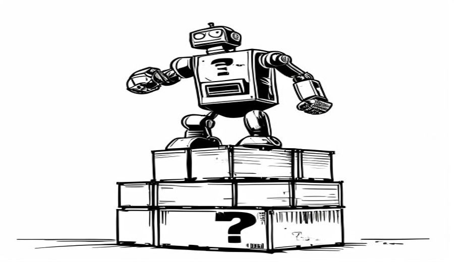

The Plausibility Trap
A robot can practice on fake video that looks perfect and still get the real world wrong.
Ibrahim AbuAlhaol, PhD, P.Eng., SMIEEE
AI Technical Lead
Imagine learning to drive by playing a racing video game. You would look great on screen. Then you sit in a real car, on a wet road, and discover that the game never taught you what happens when the tires lose their grip.
That is close to how many robots are trained today. And the word for the problem is in the title. Something is plausible when it looks believable. The trouble is that looking believable and being correct are two different things, and only one of them keeps a robot from dropping your coffee.
Why robots practice inside a dream
Chatbots had a huge advantage: the internet. Decades of human writing were already sitting there, free and public. Training a language model was mostly a matter of reading what already existed.
Robots have nothing like that. There is no website full of recordings of how heavy a box felt, how slippery a floor was, or the exact moment a cup began to slide out of a metal hand. Somebody has to go and create that information. Doing it with real robots is slow and expensive, and the robots break. A robot arm might practice a few thousand grasps in a week. A chatbot reads more words in an afternoon than a person could read in a thousand lifetimes.
Language models were handed a mountain of free text. Robots get one cup at a time. Before you fund a robotics pilot, ask where its practice data is going to come from.
So the field built a shortcut. A world model is a program that predicts what happens next in the physical world. Think of it as a video game engine that a robot can practice inside, over and over, without breaking anything real. NVIDIA's Cosmos platform describes the goal plainly: train the robot digitally first, using a copy of the robot and a copy of the world. The idea is not new. In 2018, David Ha and Jurgen Schmidhuber trained an agent entirely inside what they called its own hallucinated dream, then moved the trained behavior back into the real environment.
If the dream is accurate, practice becomes cheap and unlimited. That is a very attractive offer.
Why the video can lie
Here is the catch. These systems generate video, and they are graded on whether the video looks real to a human being. That grade rewards good lighting, believable textures, and smooth movement. It does not reward getting the slipperiness of a surface right, because you cannot see slipperiness in a picture. Look at a photograph of a floor. You cannot tell whether it was just mopped.
Looking real and being right are different skills. A world model can be brilliant at the first one while being quietly wrong about the second.
A 2026 review of the field says it directly: a rollout that looks convincing but ignores contact, force, friction, or balance is not yet usable as robot training. The mistakes also grow. A tiny error at the start of an imagined sequence pushes the next moment slightly further off, and the one after that further still. It works like a compass that is off by one degree. Walk ten steps and nobody notices. Walk ten kilometers and you are in the wrong valley.
Inside the simulation it works. Outside, it drops the ball. When a vendor shows you a demo reel, ask to watch the robot fail on real hardware instead.
What makes this expensive is how quiet it is. When a chatbot invents a fake source, anyone can check the link and catch it. When a world model gets the physics slightly wrong, it produces beautiful footage and a robot that fails later, in a way almost nobody can trace back to the practice data.
An old argument with a body attached
I have made a version of this case twice on this site, and robotics is where it stops being theoretical.
In The Causal Advantage I argued that a bigger pile of data makes a system more confident about patterns it has already seen, without teaching it what actually causes what. A world model trained to look pretty is that same pile, now running at sixty frames per second. In Intelligence Is Applied Causality I argued that we should judge intelligence by cause, effect, and action rather than by test scores. Physics is the strictest examiner there is. It never gives credit for a confident answer that is wrong.
There is also a close cousin in The Fluency Trap, where a smooth explanation gets mistaken for real understanding. Convincing video is the same swap, now with a robot body. The surface looks so good that nobody checks what is underneath.
Who made your robot's training data?
This is the part that matters to anyone responsible for safety or compliance, and it is usually left out of the robotics conversation.
When a world model creates the practice data for a robot you actually deploy, that model becomes an ingredient in your product. It sits in your supply chain the way a third party software library does, with two differences that make it harder to control. First, its output is raw video rather than a neat list, so nothing records what it contributed. Second, when it goes wrong it does not crash. It just leaves a small, invisible bias in how the robot expects the world to behave.

Your robot is standing on its training data. Ask your vendor which crate is at the bottom, and get the answer in writing before deployment rather than after an incident.
Ask the normal supplier questions and the gaps appear fast. Which version of which model produced this practice data, and what did it assume about the physical world? Did the robot in your warehouse learn to grip from real contact, or from a picture of contact? If someone gets hurt a year from now and an investigation begins, can anyone rebuild the exact conditions the robot learned under?
There is good news. In 2026 the field started judging these systems on whether the robots they train actually succeed, rather than on how impressive the video looks. That is the right instinct. Treated as a safety check rather than a scoreboard, that test is what catches a pretty simulation before it reaches a real machine.
What good practice looks like
None of this means world models are a bad idea. The shortage of robot practice data is real, and generated practice is the only realistic way to get enough of it. The argument is narrower: a good looking video is not proof that the physics was learned.
Recent work sets out what a serious version requires, and it asks for more than a better video generator. The model has to predict shape, contact, force, and balance rather than appearance. Raw recordings such as video, motion capture, and touch sensors need labels that mark what the objects were doing and whether the task succeeded. A movement copied from a human hand has to be translated for a robot hand that has a different shape, while keeping the same physical effect. And real failures in the field need to flow back and correct the models that taught the robot in the first place.
Any organization buying robots in the next few years is buying these pipelines, whether or not the contract mentions them. The vendors who can answer questions about physics will look slower in a demo and much safer in a warehouse.
What leaders should do
- Ask every robotics vendor what share of the robot's practice came from real measurement and what share was generated by a model. Get the answer in writing before deployment, not after something goes wrong.
- Make real hardware testing the thing that decides go or no go. Measure success on physical robots under messy, varied conditions, and never let a simulated video stand in as the final test.
- Keep and label the world models themselves, alongside the robots they trained. If you cannot rebuild the training conditions a year later, you cannot investigate a failure.
- Pay for touch and force sensors early. Contact is the one thing video cannot fake, and the teams that collect it own the data nobody can generate their way around.
Related Articles
References & Extended Literature
- Ha, D. and Schmidhuber, J. (2018). "World Models." arXiv:1803.10122. https://arxiv.org/abs/1803.10122
- NVIDIA (2025). "Cosmos World Foundation Model Platform for Physical AI." arXiv:2501.03575. https://arxiv.org/abs/2501.03575
- "Robots Need More Than VLAs and World Models" (2026). arXiv:2606.06556. https://arxiv.org/abs/2606.06556
- "From Generative Engines to Actionable Simulators: The Imperative of Physical Grounding in World Models." arXiv:2601.15533. https://arxiv.org/abs/2601.15533
- "A Definition and Roadmap for World Models." arXiv:2607.06401. https://arxiv.org/abs/2607.06401